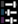
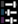

What is this?
This is an app for viewing and editing Mandachord songs.
The main motivation was to provide a way to be able to copy my songs into the game without having to pause a video. But while I was at it I went ahead and made it a full blown editor.
Mandachord song codes?
There actually is a Mandachord song code format. If you link a song in chat, and then look at your EE.log file after quitting Warframe, then you will see something like this:
[SONG-Best Song Ever:AADDnwAAEggAAIggAEGBAJCAAABIAAAYAAgFwAECkCAgiAAAKEEACYAhAoAAAAgAAQgICCHAgQCQAEEIAABIQgAJgCEEgAAASAAIGAAABYAAIYAIIQgAAEgCBEGAABCAAAAIAAEIAAhBwgEAkA==:BardCorpusPackA:BardGrineerPackA:BardCorpusPackB]
You used to be able to paste this back into the in-game chat window and get a song link back, but unfortunately that hasn't worked in a couple of years. Still, it's as good a format as any, so that's what this editor is using.
I have a program for extracting song codes from your EE.log file, if you're comfortable with running python: songparse.
Table of Contents
- Getting Started
- Basic Editing
- Advanced Editing
- Undo/Redo
- Playback
- Saving
- Library
- Playlist
- Mixer
- Instrument Pack Notes
- Update Notes
- To Do
- Known Issues
Getting Started
If you came here from a song link then it should already be displayed.
If you have a song code then paste it in the Song Code text box and hit enter.
Basic Editing
If you're familiar with the in-game Mandachord editor then you already know how most of this works.
Title
Enter the title of the song here. The in-game restrictions on Mandachord song titles are pretty severe, but the only thing being restricted here is a 24 character limit
Instruments
You can adjust the settings here for each section individually: Percussion, Bass, and Melody.
Instrument Pack
Use the dropdown to choose one of the nine instrument packs.
Volume
Use the slider to adjust the volume. Full volume is all the way to thr right, zero volume is all the way to the left.
Isolation
Use the checkboxes on the right to turn particular sections on and off.
Note that the isolation settings are not part of the song code and don't get saved.
Notes
The rest of the screen is dedicated to the note grid. This is laid out just like the Mandachord screen, except as a rectangle instead of a disc.
The top three rows are percussion, the next five are bass, and the bottom five are melody. Time ordering goes from left to right.
Click a location in the grid to turn a note on, or click a location with an existing note to turn that note off. You can also click and drag across an area to create multiple notes next to each other.
The score is broken out into four measures. Each measure has a maximum number of notes that can be present in each section:
- Percussion: 26 notes per measure
- Bass: 16 notes per measure
- Melody: 16 notes per measure
Exceeding the note limit on a section of a measure will play a small warning sound.
If your screen is wide enough then all four measures will be displayed in a single row. If your screen is not wide enough for that, then there will be two rows of two. If your screen is not wide enough for that the four measures will be arranged vertically.
Advanced Editing
Clear
Clear Measure
Above each measure is a
 Clear button. This can be used to clear part or all of the
measure. Clicking this will bring up a menu:
Clear button. This can be used to clear part or all of the
measure. Clicking this will bring up a menu:
- All: Use this to completely clear the measure
- Percussion: Use this to clear just the Percussion section of the measure
- Bass: Use this to clear just the Bass section of the measure
- Melody: Use this to clear just the Melody section of the measure
Clear Song
Above the Song Title bar is another
 Clear button. This allows you to clear notes from all four measures. It has the same
options as the per-measure Clear button: All,
Percussion, Bass, or Melody.
Clear button. This allows you to clear notes from all four measures. It has the same
options as the per-measure Clear button: All,
Percussion, Bass, or Melody.
Copy/Paste
Copy/Paste Measure
Above each measure is a
 Copy button. This can be used to copy part or all of the
measure, allowing it to be pasted to a different measure. Clicking this button
will bring up the usual section options: All, Percussion,
Bass, or Melody.
Copy button. This can be used to copy part or all of the
measure, allowing it to be pasted to a different measure. Clicking this button
will bring up the usual section options: All, Percussion,
Bass, or Melody.
Once a copy selection is made in one measure, the Paste buttons are enabled on the other three measures. Clicking the Paste button will copy the selected section from the copied measure into that measure, overwriting any existing notes in that section.
Copy/Paste song
Above the Song Title bar is another set of
 Copy and
Paste buttons. This allows you to copy and paste notes from all four measures.
Copy and
Paste buttons. This allows you to copy and paste notes from all four measures.
This is mainly useful when editing a playlist. It allows you to copy all or part of a song into another playlist entry.
Only one thing can be copied at a time, either part of a measure or part of the whole song
Copy/Paste between Melody and Bass
If just a melody or a bass section has been copied, then holding the Shift key down while clicking the Paste button will bring up another section menu, containing just Bass or Melody. Select the section to paste into.
This allows you to copy a melody to a bass, or vice-verse. This works with both a single measure and the whole song.
Copy/Paste Performance
Click the song-level
 Copy button and choose

Performance to copy the instrument pack and volume settings for the current song.
Clicking
Paste on another song in the playlist will paste those settings into that song.
Copy button and choose

Performance to copy the instrument pack and volume settings for the current song.
Clicking
Paste on another song in the playlist will paste those settings into that song.
Undo/Redo
Undo and Redo is available using either the
 Undo and
Undo and
 Redo buttons
above the Song Title bar, or by using Ctrl-Z for undo and
Ctrl-Shift-Z or Ctrl-Y for redo.
Redo buttons
above the Song Title bar, or by using Ctrl-Z for undo and
Ctrl-Shift-Z or Ctrl-Y for redo.
All actions can be undone, including note changes, section setting changes, title changes, paste, clear, loading a song from the library, and all edits made to the playlist.
Playback
Use the
 Play
buttons to start and stop playback on either all or part of the song.
Playback will loop back to the beginning until stopped.
Play
buttons to start and stop playback on either all or part of the song.
Playback will loop back to the beginning until stopped.
Just like in game, the current playback location is marked with a vertical line, and individual notes will have a small visual bounce as they are played.
Pressing Space during playback will pause at its current location. Pressing Space again will resume playback where it left off.
Pressing Shift-Space or holding Shift and clicking Play during playback or while playback is paused will restart playback at the beginning of the song or measure.
Pressing the same
 Stop button while playing will stop playback and clear the current
playback location.
Stop button while playing will stop playback and clear the current
playback location.
Note: The sounds themselves were recorded in-game. I hope this is okay.
Play Song
Click the
 Play button above the Song Title bar to play the entire
song. Playback will go through all four measures before looping back to the beginning.
Play button above the Song Title bar to play the entire
song. Playback will go through all four measures before looping back to the beginning.
Play Measure
Click the
 Play button above a measure to play just that measure in a loop.
Play button above a measure to play just that measure in a loop.
Clicking the
 Play button above a different measure, or clicking the whole song
Play button above a different measure, or clicking the whole song
 Play button, will immediately stop the current playback and start a fresh playback
on the clicked measure or song.
Play button, will immediately stop the current playback and start a fresh playback
on the clicked measure or song.
Play Cursor
Click on the ruler bar above the note section to move the playback cursor to that location. This works even when playback is in progress.
Click on the ruler bar or the cursor itself and drag to move the playback cursor across the song while playing any notes under the cursor. It's both fun and pointless.
Saving
There are three ways to save your song for later: by code, by URL, or by generating an image.
Song Code
To save your song by code, simply copy the code out of the Song Code bar at the top of the page. This Song Code is automatically updated as changes are made to the song.
To restore a song from a code, open this page again and paste the song code into the Song Code bar.
Unfortunately, that's all you can currently do with a song code. You used to be able to paste the song code into the in-game chat window and get a song link back, but that hasn't worked in years.
Share URL
If you want a shareable URL that goes directly to your song, click the
 Link
button at the top of the page. Copy this, and paste it into a browser to bring up this page
auto-populated with your song.
Link
button at the top of the page. Copy this, and paste it into a browser to bring up this page
auto-populated with your song.
Export to PNG
If you want an image, then click the Generate PNG button at the top of the page. This will bring up a link to download your song as a PNG, including section settings and all four measures.
Note that you cannot re-import a PNG to edit it again. You should also save your song as either a Song Code or URL so you can come back to it later.
Export to WAV
If you want an audio file, then click the
 Generate WAV button at the top of the page.
This will export the song loop, or the entire playlist if you have one open, to an uncompressed
WAV file.
Generate WAV button at the top of the page.
This will export the song loop, or the entire playlist if you have one open, to an uncompressed
WAV file.
While the WAV file is rendering, clicking anywhere outside the progress box will close it and cancel the process.
Note that this can take a long time. You will be able to watch the progress as it renders the WAV file.
Note that this does not work in all browsers. Nothing I can really do about it. There is full support in Chrome and Edge, partial support in Firefox, and no support in Safari.
Autosave
As you are editing, your song will automatically be saved to your browser's location bar. If you use the browser's forward/back buttons, intentionally or accidentally, then reversing that back to this page should resume where you left off.
Note: Updates take a second or two to appear in the location bar.
Library
Click the Library button to enable the library. This contains a demo for each instrument pack, along with every Mandachord request I've done.
There are thousands of songs and it's all loaded into your browser. I'm not sure how well this works on devices with limited memory.
Navigating the Library
The library is loosely categorized by genre and artist. Click on a category header to expand that category. Click it again to collapse it back down.
Note: Next to each category is a count of the total number of songs it contains.
Some categories contain sub-categories, and some just contain songs. Below the main categories, subcategories are roughly ordered by artist, and individual songs are ordered by title.
Click the
 menu button, then
menu button, then
 to expand all visible categories.
Click
to collapse all categories.
to expand all visible categories.
Click
to collapse all categories.
Loading a song
Click on a song entry to load it into the Mandascore editor. If the editor is currently playing then playback will be reset to the beginning.
If the selected song has more than one Mandachord loop then the Playlist will be temporarily enabled, and playback will go through all the loops.
Building a playist
By default, clicking a song in the library will replace the song currently in the Mandacore. If the previously selected library song had multiple Mandachord loops then the playlist will be cleared for the new song.
Enable the playlist by clicking the Playlist button, making sure it's lit up. This will keep the playlist up and append songs as they are selected.
Searching the library
By default, the entire library is listed. Songs are categorized by my completely arbitrary classification system.
There are three ways to filter down the list of songs, by Keyword, by Instrument Pack, and by Category. All three of these can be used at the same time or in any combination.
Keyword Search
The bar at the top is a search bar. Enter one or more keywords to narrow down the listing. The keyword can be a category, a title, an artist, or anything else that appears in the description of the song.
Multiple keywords can be entered. Only songs that match all the keywords will be shown.
Keywords must be three characters or longer before they will be searched
Instrument Pack Filtering
Click the
 menu button, then
to bring up the instrument pack filter.
menu button, then
to bring up the instrument pack filter.
This filter contains a grid of checkboxes for selecting specific combinations of instrument packs and parts. Only songs using the selected instrument packs and parts will appear in the search results.
- Click the All checkbox in the upper left to enable or disable everything at once. Use this to clear the grid so just certain instrument packs or parts can be enabled.
- Click the left-most checkbox to enable or disable all parts of that instrument pack.
- Click the top checkboxes under the part icons to enable or disable that part for all instrument packs.
- Click any of the rest of the checkbox to enable or disable just that part from that instrument pack.
Note: There must be at least one instrument pack under each part selected for search results to show up.
Use the  reset button
at the top to reset the filter and enable everything.
reset button
at the top to reset the filter and enable everything.
Category Filtering
Click the
 menu button, then
to bring up the category filters.
menu button, then
to bring up the category filters.
- Perfect Melody: Filters for songs that translated perfectly into the Mandachord.
- Filled Melody: Filters for songs with full or mostly full melodies, for players that don't want to think when getting Octavia buffs.
- Sparse Melody: Filters for songs that have a lot of space. These require fewer synchronized actions to get a buff.
- Multi-shot: Filters for songs that have multiple mandachord loops from different parts of the original song
- Hide demo songs: Hides the demo section at the top of the library.
Resetting the Search
Click the  menu
button and select
menu
button and select  reset
to reset all keyword, instrument set, and category filters.
reset
to reset all keyword, instrument set, and category filters.
Instrument Statistics
Click the  menu
button and select
Instrument Statistics to bring up the statistics view.
menu
button and select
Instrument Statistics to bring up the statistics view.
This shows the breakdown of instrument packs over the current search result. Each instrument pack is shown with a histogram of how often its parts appear.
Mouse over a histogram bar to see the actual percentage and raw count.
Note that the raw count may not be a whole number. If an entry in list is a Multi-shot containing multiple songs that use different instrument packs then those will count fractionally, so it still adds up to one song overall.
Use the
 ,
,
 ,
,
 , and
, and
 buttons at the top to switch between
showing the stats for all parts and the stats for just a single part.
The button shows the average of all three.
buttons at the top to switch between
showing the stats for all parts and the stats for just a single part.
The button shows the average of all three.
Reset the search, bring up the Statistics view to show the numbers for the entire Mandascore Library, and bow down to Druk Bass.
Date Statistics
Click the  menu
button and select
Date Statistics to bring up the date statistics view.
menu
button and select
Date Statistics to bring up the date statistics view.
This breaks down my library by the date that the original YouTube video for each song was published.
Use the Years, Months, and Weeks tabs at the top to switch between different time grains.
This feature is mainly for my own curiosity. I don't know how I was putting out dozens a week for the first few months.
Playlist
The playlist feature allows you to queue up a sequence of song loops to play one after the other.
Enable the playlist by clicking the Playlist button in the top bar.
This is purely for my own amusement, use it if you want.
Adding a song
If the playlist is empty, then clicking the
 Add button will add the current contents of the song editor as a new
song in the playlist.
Add button will add the current contents of the song editor as a new
song in the playlist.
Editing the playlist
Selecting a song
Click on a title in the playlist to select that song and display it in the song editor. Any changes will be saved to the selected playlist entry.
You can also use the Up and Down arrow keys to move between playlist items.
Highlighting multiple songs
When a single song is selected, click the
 highlight button beside another song entry above or below it to highlight a contiguous block of songs.
Currently highlighted songs will be marked with
highlight button beside another song entry above or below it to highlight a contiguous block of songs.
Currently highlighted songs will be marked with
 .
.
Only one song can be selected and displayed in the song editor, but any number of songs above or below the selected song can be highlighted.
Click another
 or
or
 button to change where the highlight stops.
button to change where the highlight stops.
Selecting a new song will clear the highlight.
Holding the Shift key while selecting another entry in the playlist does the same thing
as clicking the
 highlight button. It will highlight the block of entries instead of selecting that entry.
highlight button. It will highlight the block of entries instead of selecting that entry.
Copying songs
When a song is selected in the playlist use the
 Add button to make a copy of this song. It will be inserted directly after the
selection and automatically selected.
Add button to make a copy of this song. It will be inserted directly after the
selection and automatically selected.
If there are highlighted songs in addition to the selected song, then the entire block of songs will be copied and placed after the last highlighted song.
Moving songs
Click and hold the
 move button beside a song to drag that song to a new location.
move button beside a song to drag that song to a new location.
You can move any song, whether it's selected or not.
If there is a block of songs highlighted, then clicking an dragging the
 move button beside any highlighted song will move the entire block.
move button beside any highlighted song will move the entire block.
If there are enough songs to scroll out of the playlist window, then dragging near the edge will automatically scroll.
Deleting a song
Click the
 delete button beside a song to remove that entry from the playlist.
delete button beside a song to remove that entry from the playlist.
If the currently selected song is deleted then the next song will be automatically selected.
Playing the playlist
By default playlist looping is enabled. This means that if you play the full song then it will automatically advance to the next entry in the playlist at the end of measure four.
The playlist will not advance when playing a single measure.
Click the
 Disable button above the playlist to disable it. While disabled the song will not
advance to the next playlist entry after measure four; it will stay on the same song. Click the same
Disable button above the playlist to disable it. While disabled the song will not
advance to the next playlist entry after measure four; it will stay on the same song. Click the same
 Enable button to re-enable it.
Enable button to re-enable it.
Saving the playlist
There are two options for saving/loading a playlist.
Copy/Paste
Click the
 Copy/Paste button to bring up a text area containing the song codes for every song in
the playlist. You can copy this and save it wherever you want.
Copy/Paste button to bring up a text area containing the song codes for every song in
the playlist. You can copy this and save it wherever you want.
You can also paste a new song list into this text area. This will replace the current playlist, if any.
Playlist URL
Click the
 Link button above the paylist to generate a shareable URL with the
entire playlist embedded in it. Opening the URL will open Mandascore and restore the playlist.
Link button above the paylist to generate a shareable URL with the
entire playlist embedded in it. Opening the URL will open Mandascore and restore the playlist.
I'm compressing it, but this URL can still be very large.
Autosave
As you are editing, your playlist will automatically be saved to your browser's location bar. If you use the browser's forward/back buttons, intentionally or accidentally, then reversing that back to this page should resume mostly where you left off.
Note: Updates take a second or two to appear in the location bar.
Mixer
The mixer feature allows you to control the volume of and toggle individual note tracks.
Changes made in the mixer apply to every song in a playlist. Copy/pasting a playlist or generating a playlist link will include the mixer settings, if any.
Mixer Volumes
The volume sliders in the mixer section allow control over a section's volume or an individual note track within that section.
The master volume controls overal output volume, on top of section and track volumes.
Each section's main volume controls output volume for all tracks in the section. Adjusting the section volume will lock all the note track volumes to the same value.
Adjusting a note track volume will only affect that note track. The section volume will show the average of the note track volumes, but it's just for show.
Note: The section mixer volume is separate from the volume in the song info. The song info volume applies only to that song loop, and is saved along with it. But the section mixer volume applies to every song loop and is not saved as part of any song.
Mixer Toggles
The toggle buttons in the mixer sections allow control over whether a section or an individual note track is enabled
Toggling a section on or off will apply the same setting to all of that section's note tracks.
Toggling a note track will only affect that note track.
If all of a section's note tracks are disabled then the section itself is automatiacally disabled, and if one of a section's note tracks is enabled then that section is automatically enabled.
Note that the setion toggle under the mixer is exactly the same as the section toggle in the song info, and changes made to one will be reflected in the other.
Reset Mixer
Clicking the
 Reset button Will revert the mixer to having all note tracks enabled at full volume.
Reset button Will revert the mixer to having all note tracks enabled at full volume.
Instrument Pack Notes
Adau
The default instrument is ironically one of the hardest to work with.
The percussion is different from all the other instrument packs. It's a low drum, a double-drum, and a high drum. The double-drum is unique: a single note actually plays twice, a sixteenth note apart. Putting a series of middle-drum notes one grid square apart will play a continuous drum roll.
I've found the best way to work with Adau percussion is to use the high and low drums as the basis of the rhythm, and the middle double-drum supporting the other two as a lead-in or filler.
The bass is the only bass in the current instrument pack lineup that's pitched high and clear enough to do chords. That's usually how I use it. Unfortunately, because it's pitched so high, and because I'm usually doubling up with chords, it tends to drown out most melodies. For that reason I usually back the volume off a bit.
The melody is very, very mushy. Single notes are very hard to distinguish a clear start time. Fast notes just blend together.
The one place where the Adau melody shines is emulating long-held notes. Because of the mushiness, repeating a note every grid space will blend together into a single, long note. Adau is the only melody that can do this well. You can also quickly alternate between 2-3 notes and get a similar effect as a long-held chord.
Alpha
The Alpha instrument pack is 100% Techno.
The percussion has a very distinctive 80's techno bass drum, but it should be used sparingly unless you're going for an obnoxious "hard-bass" style. The snare is a relatively high-pitched whip-crack snare, also best used sparingly. The hi-hat is one of the strongest in the line-up, but not overwhelming.
I've found the best way to use the Alpha percussion is to keep it simple with the bass and snare, and save the creativity for the hi-hat.
The bass notes take about half a measure to play out and aren't very strong. This is more of a atmospheric bass than something you can make a recognizable bass line out of.
The melody is one of the best overall melodies in the line-up. Each note takes about 2-3 grid spaces to play out, so it's not great for fast melodies. Otherwise it's very strong and clear. I use it a lot for mid-range, slower melodies that I want to be recognizable.
Beta
Beta is one of the more low-key instrument packs.
The percussion bass and hi-hat are relatively gentle. I tend to use them if the song I'm trying to adapt doesn't have percussion at all. The snare, on the other hand, is pretty aggressive. In some of my longer videos I use the Beta snare in place of a crash cymbal.
The bass is very low, almost sub-audible. You feel it more than you hear it. You can do a pretty chill bass line with it, but people aren't really going to be able to recognize it as anything. It's also pretty good at doing a long-held bass note if you repeat it.
The melody kind of suffers from the out-of-tune sound, but it's pretty short not counting the echo. It's a decent choice for fast melodies, and the echo can fill in slower ones.
This is my default substitute melody for Piano.
Bombast
This instrument pack comes with Octavia Prime. This might be a problem after Octavia Prime is vaulted, but for now I plan on using it.
The percussion might replace Gamma as my go-to Hip Hop percussion. A strong bump bass, a sharp clap for a snare, and a clear hi-hat.
The bass is excellent. It's low like Beta, but shorter and stronger. It blends together very nicely when played fast. I can do a lot with this bass.
The melody is unlike anything else in the Mandachord lineop. It's your classic West Coast hip hop lead. There are built-in bends that make it awkward, especially on the lower two. It's pretty niche, but it's good for making anything sound like it's backing Snoop Dogg.
Both the melody and the bass are monophonic. They literally won't do chords; if you put multiple notes at the same time then only the highest one will play. This is very noticeable with the melody, it would be a mess without it, but the bass does this as well.
Delta
Delta is kind of an oddball. I use its percussion a lot, but I almost never touch its bass or melody.
The percussion has a strong, short snare that I use a lot for drum and bass and a couple of EDM styles. The bass and hi-hat fit well but aren't anything special, I mostly use this for the snare.
The bass is both very disinctive and hard to deal with. The main sound is delayed enough that you have to place it a grid square ahead of when you want it to actually play. When it plays its sound cuts through everything, you usually have to knock the volume back to hear anything else.
I just never end up using this bass. You need a really good sound match before it makes sense over any of the other bass options.
Like the Bombast bass, the Delta bass is monophonic, but it's hard to tell sometimes.
The melody. Personally, I've never heard the Delta melody used in-game in any way other than to be as obnoxious as possible.
Like the Bombast melody, the Delta melody is monophonic.
It is possible to make something interesting and okay to listen to. But you have to spend a lot of time playing with the five notes and seeing how they can blend together. They all sound very different, and bear only a passing resemblance to the scale note they represent. The bottom four take almost half a measure to play out, but the top note is faster can get away with being played quicker.
Druk
Druk is heavy metal all the way
The percussion is very strong and loud. Since you can't vary the volume it comes off a little too strong if you really hammer on it like a heavy metal drummer, but it's not usually a problem. For any music with a live drummer it's usually either Druk or Plogg, depending on how heavy it is.
The bass is my favorite bass in the line-up. It's clear and short. You can build a huge variety of complicated bass lines. It cuts through battle noise very well in game. Sometimes if you've got a very busy bass against a weaker melody you'll want to cut the volume a bit.
This is easily my most used bass.
The melody is kind of mushy, and also an octave below most of the other melodies in the line-up. If I try and do a busy melody line with this then I'll always double it up on the bass to give it more definition.
I have a pretty hard time hearing the Druk melody when I'm in mission, so I usually keep it simple.
Epsilon
Epsilon is EDM with a more Eurobeat-feel to it.
The percussion has among the longest snare and hi-hat sounds, good for filling a lot of space or cutting through other sounds. The bass drum is low and long as well, but my reasons for using Epsilon percussion are mostly for the snare and hi-hat.
The bass is hard to work with because it's a dual sound. First a low note, then one grid square later a higher, clearer note. I find this works best when you place it a grid square before where you want it to sound. The higher part also tends to overshadow some melodies, making it even tougher to use effectively.
The bass is kind of monophonic, within each tone. If you play two instances of the same tone quickly one right after another then the first one will stop playing when the second one starts. However, you can play two different bass tones simultaneously.
The melody is an octave or more above all the other melodies in the line-up. It takes a whole quarter note to fully play out, but it doesn't get mushy with faster melodies.
This is my go-to choice for high-pithed melodies, including high strings.
Gamma
Gamma is mainly for hip-hop, but the melody is extremely versatile.
The percussion is my go-to for any rap or hip-hip. It has a very strong hi-hat, and a high pitched snare that's almost like a hand-clap. The bass drum is pretty standard but fits with the theme.
The bass is a low brass note that takes about a quarter-note to play out. You can't do fast bass-lines, but you can fill space with it. Most of the time, if I'm doing hip-hop then I end up doubling up the base on the bass drum rhythm.
The melody is my go-to melody for anything fast-paced. Aside from a little but of de-tuning, it's short and clear and great for just about anything with a lot of sixteenth notes.
It's a toss-up whether Gamma or Alpha is my most used melody.
Horos
Horos is the community-voted "EDM" pack which... I mean, half the instrument packs in the line-up qualify as "EDM". The community is dumb sometimes, but it's a good instrument pack.
The percussion bass drum and snare make a solid club beat. I find myself just doing bass drum on the beast and snare every other beat a lot with this instrument pack. The only unfortunate thing is the hi-hat, which is so weak it's almost inaudible compared to the rest.
The bass is my second-favorite bass after druk. It's short and clear, and you can do tons of stuff with it. I find myself using it a lot for repetitive synth-wave bass lines.
The melody is pretty hard to use. Each note has is a built-in chord, a ton of overtones, and echoes for a good 3/4 of a measure. The best way to use this is sparingly.
Plogg
Plogg is kind of a lighter rock, except the bass player keeps his amp turned up way too loud even though they keep asking him to dial it back.
The percussion is a pretty standard live drum kit. Its strength is that it's so generic that it fits in everywhere.
The bass is the loudest in the line-up. Honestly, when I use this bass I usually turn it down to half-volume. It takes two grid squares to sound out, so it's not for fast bass lines.
The one exception is if I need a long-held bass note that's as hardcore loud as possible. Repeating a Plogg bass note like with the Adau melody works pretty good for that.
The melody, like Druk, is an octave below most of the other melodies. I use this a lot for low male vocals, and the occasional clean guitar. It takes two grid squares to sound out so it's not great for fast melodies.
Clazz (Concept)
The instrument pack request I hear the most is "piano". So here's my concept.
The percussion is smooth jazz, because even Plogg is still too heavy for some songs.
The bass is high and clear enough to play chords. The only other bass that can do that right now is Adau.
The melody is an octave higher than most of the other melodies. We don't have enough of those and most piano requests I get fall into that range.
Zeta (Concept)
I would love a reto-gaming chiptune instrument pack. So here's my concept.
The percussion is based on a Commodore 64, the earliest thing I could think of that can pull off a distinct bass drum.
The bass is from some Super Breakout clone I used to play. I can't remember the platform but I can hear that ball bouncing sound very clearly in my head.
I wanted something high and chill for the melody, because we don't really have anything like that yet. I guess it turned out a little Nintendo-esque?
Update Notes
v1.0: 2020-10-14
- Attempt to make starting playback right after loading the page smoother.
- Added my concept instrument packs because I can.
- Fixed the volume encoding (thanks HZDeluxe)
v2.0: 2021-01-26
- Added a Playlist function, for the lulz.
- Fixed a little problem with the playlist incrementing when you're only playing a single measure.
v2.1: 2021-02-14
- Added a searchable library of songs.
- Fixed issue with searching causing playback to stop making sound, I think.
v2.2: 2021-02-23
- Added Bombast instrument pack, along with support for monophonic instrument packs.
- Added a confirm step to clearing the playlist, that's bit me one too many times.
- Added color coded tag displays to the library list for filled, sparse, perfect, multiple shots, and instrument packs.
- Smoothing out playlist playback when the instrument pack changes.
v2.3: 2021-03-11
- Added a Mixer function.
- Put the demos in the library
- Needs a master volume in the mixer.
- Shift-play and Shif-space start from the beginning
- Re-recording Bombast for melody sound change on the low D, also adding support for multiple samples for each sound, like it does in-game, and re-recording Bombast and Adau in full.
- Re-recording multiple samples for the other instrument. If you can tell the difference you've got better ears than I do.
- Fixed an issue with changing an instrument pack too quickly
v2.4: 2021-06-22
- Added an experimental search to the Library to find songs "similar" to the current one. Open the Library and Shift-click on the Library button to try it out.
v3.0: 2021-08-11
- You can now click and drag the playback cursor. What a country.
- Revamped copy/paste so you can use it between loops in a playlist.
v3.1: 2021-10-19
- Reworked the playlist editor to support moving entries by dragging, and also undo.
- Added whole song copy/paste options.
- Added autosave to the browser URL, why did that take me so long
v3.5: 2021-11-02
- Switched most icons to buttons.
- Multi-select support in the playlist editor for moving and copying.
- Added button for reverse song search because why not
- Copying a melody or bass and shift-clicking on the paste button will let you copy a melody to a bass and vice-versa.
- Shift-clicking on a playlist entry will highlight the block.
- Added copy/paste performance option
- Optimized the playlist advancing to the next song a tiny bit
v3.6: 2022-01-31
- Added ability to export the song/playlist to a WAV file. Not completely supported by all browsers.
- Optimized the WAV export, like, a lot. On a long playlist it's literally 100 times faster.
- Added support for moving up and down the playlist with the up and down arrows
v3.7: 2022-07-29
- Added song count in the library section
- Switched Delta melody, Delta Bass, and Epsilon Bass to monophonic, which has apparently always been the case. How did I not notice this until now? (Thanks Tylian)
- Adjusting fade time and type of monophony on a per-instrument basis to match how the in-game player sounds
v3.8: 2024-01-30
- Finally sat down and fixed the cutoff bug with rendering playlists
- Added handling for audio latency, which is surprisingly easy
- Oops, Percussion has a 26-note limit per measure, not 24 (thanks dierubikdie)
v3.9: 2025-07-07
- Added instrument pack filtering and tag filtering to Library
- Added statistics view to Library. STATISTIIIIIIICS
- Removed reverse library search until such time as it can be made to not suck
- Added collapse and expand support to Library, sorted library index
- Added date statistics view to Library.
- Updated menu code, refactored filter menu
To Do
- Blur the title field when switching songs in the playlist
- Crtl-V support for pasting notes
- Fix monotonic instruments bleeding across loop breaks when converting a playlist to a .WAV.
- Shift notes to the left/right function
- Saving to local storage?
- Touch support for copying between melody/bass, somehow.
- Improve library reverse search.
- Goddamned MIDI input support
Known Issues
- The library data store and search function is pretty dumb right now. It possibly doesn't work so great on devices with limited horsepower.
- There may be some delay when playing an instrument pack for the first time. This is because of the safeguards a lot of browsers have in place to prevent auto-play video and audio. There isn't much I can do about it. You have to click something before it can even load the sounds.
- The playback note animations sometimes cause Firefox to continually reload the note images over and over again.
- With Safari and possibly iOS, minimizing or otherwise hiding the window while it's playing will stop the audio. When you come back it takes a few tries playing and stopping before it fully returns. I'm not quite sure what's going on there yet.
- Not sure if it's just my phone, but playback on Chrome for Android kind of sucks.
- Dragging the playback cursor, mousing over a disabled Paste, then dropping, will not register the drop and you have to click again to stop dragging the cursor. I'm too lazy to fix it right now.
- If you stop playback close enough to the end of a song and then start it again it will skip over a song in the playlist.
- You can't cancel a rendering in progress in Firefox.
- Generating a WAV file is not supported at all in Safari.
- There's currently a lot of ways to mess up WAV rendering by clicking where you shouldn't while it's running.